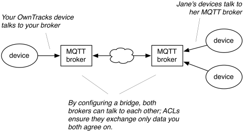

Bridging
In order to profit from the Friends feature in OwnTracks, all contacts you want to be able to track on your your device must share a broker, but that can be difficult if both you and your friend (henceforce "Jane" in the examples that follow) also use your brokers for other purposes.
Mosquitto (and some other MQTT brokers) have a feature called bridging which basically lets you connect two (or more) brokers together.
Let's assume that you and Jane want to see each other's location updates while maintaining a connection from your devices to your respective MQTT brokers at home. In other words, you will use your broker, whereas Jane connects to her broker because, e.g. she has private contacts who use her broker, but she doesn't want you to have access to those.

What will happen?
Setting up a bridge is not difficult, but there are some things we have to keep in mind. In this example, we'll assume the following:
- Your broker will initiate a connection to Jane's broker
- You'll be using TLS to protect credentials and data in transit
- Jane has given you (e.g. via e-mail) a copy of her TLS CA certificate
- Jane has set up an ACL on her Mosquitto broker to ensure you have access only to her OwnTracks location data and nothing else.
- Jane has a username and password for your broker to use when connecting to her broker, and she's given you both.
- Jane has a device called
nexus7and she publishes location updates to her broker atowntracks/jane/nexus7. - You have an iPhone and want to share your location data with Jane. You publish (on your broker) to
owntracks/john/iphone.
Here's what you configure on your broker's mosquitto.conf:
# Bridge to Jane
connection br-me-to-jane
bridge_cafile /etc/mosquitto/jane/JANE-OwnTracks-ca.crt
bridge_insecure false
address jane.example.org:8883
cleansession false
clientid br-john-jane
start_type automatic
username john
password s3cr1t
notifications false
try_private true
topic nexus7 in 2 owntracks/jane/ owntracks/jane/
topic iphone out 2 owntracks/john/ owntracks/john/
These last two lines define which topic branches will be published (out) and
which will be subscribed to (in) from the point of view of your broker. There
are a lot of things you can tweak in this configuration, but this is should get
you started.
Publishes
When your device publishes location data to your broker, it will publish the single topic owntracks/john/iphone to Jane's broker. Conversely, as your broker is now subscribed to Jane's at owntracks/jane/nexus7, it will receive Jane's location data and re-publish that to your connected device.
Events
OwnTracks uses more than just a single topic per user as documented. This means we must add more topic statements to our broker (and Jane to her broker) if we additionally want to support transition events (e.g. when did Jane leave home?) and outgoing commands (e.g. tell Jane's device to report its location now).
Assuming Jane allows this (by configuring appropriate ACLs on her broker), we add one or more of the following. The first line we already had: it bridges Jane's location publishes in to our broker. The second line is new: it bridges Jane's nexus7 events into our broker.
topic nexus7 in 2 owntracks/jane/ owntracks/jane/
topic event in 2 owntracks/jane/nexus7/ owntracks/jane/nexus7/
CMD
Tapping on OwnTrack's request location update publishes a cmd to the destination device, so we bridge that topic out towards Jane's broker:
topic cmd out 2 owntracks/jane/nexus7/ owntracks/jane/nexus7/
MQTTitude
Let's assume for the moment that you're running a broker with a number of connected OwnTracks clients, some of which are still publishing to the "old" topic branch at `mqttitude/', but you want to "assimilate" these clients into your environment without having to force them to rename the topic to which they publish. You can easily do that in Mosquitto, by adding the following line to your bridge configuration:
topic # in 2 owntracks/ mqttitude/
What this does is: your bridge subscribes to the remote topic mqttitude/# and all received messages will be republished at owntracks/ on your broker (note the in direction).
Neat, eh?
Consult the manual page for mosquitto.conf for more details.